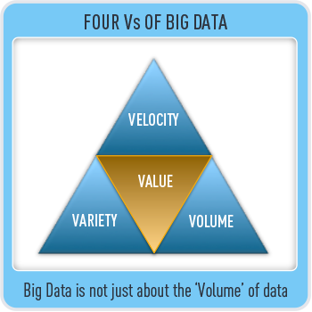
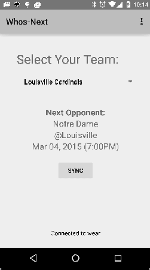
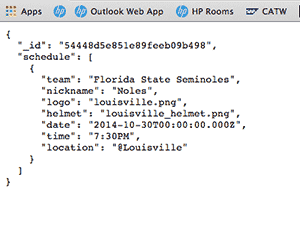
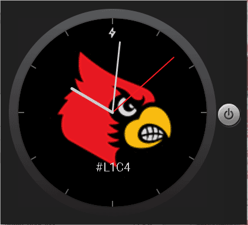
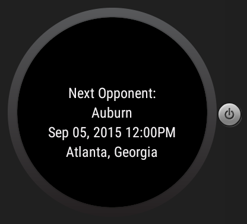

The Internet of Things (IoT) is the network of physical objects or "things" embedded with electronics, software, sensors and connectivity to enable it to achieve greater value and service by exchanging data with the manufacturer, operator and/or other connected devices. Each thing is uniquely identifiable through its embedded computing system but is able to interoperate within the existing Internet infrastructure.
-
IoT Estimates...
- 4.9 Billion Connected "Things" Will Be in Use in 2015...
- 25 Billion Connected "Things" Will Be in Use by 2020...
- That's alot of things!!!
(http://www.gartner.com/newsroom/id/2905717)
What's the big deal?


- “Hack The Home” Hackathon @ FirstBuild (Apr 10-11):
- Adapted a conventional GE wall oven to roast coffee precisely using an Arduino control.
- Use voice commands to control the water dispenser on your GE refrigerator from a mobile device or tablet
- Wifi-enabled remote control crockpot with video that gives you greater control without being there. Crock Watch lets you control your crock pot from afar with an app and even monitor the cooking process
Big Data
- Volume
- Velocity
- Variety  Forbes: $125 Billion Big Data Analytics Market in 2015


SmartWatches:
- Activity Bands (Fitbit/Fuel/
Jawbone) - Pebble Generation
- Mainstream API Watches
- Android Wear
- Moto 360
- LG G Watch
- Asus ZenWatch
- Samsung Gear Live
- Smart Watch 3
- LG G Watch R
- LG Watch Urbane
- IOS
- Apple Watch
Forbes Says...
IoT Market could be as high $7.1 trillon in 2020?
How do you get your piece of an IoT market that by some estimates could be as high as $7.1 trillon in 2020?
What are we going to talk about?
- Basics of Android Wear and how it works
- Look at how Android Notifications work with Android Wear
- How do I get up and running with a simple app
- Communication between wear and mobile by breakdown creating a more complex app that leverages cloud, Android/Android Wear, and MEAN stack
Basics of Android Wear and how it works
Android Wear Info
Android Wear is a version of Google's Android operating system designed for smartwatches and other wearables. By pairing with mobile phones running Android version 4.3+, Android Wear integrates Google Now functionality and mobile notifications into a smartwatch form factor. It also adds the ability to download apps from Google's Play Store.
The platform was announced on March 18, 2014, along with the release of a developer preview. Companies such as Motorola, Samsung, LG, HTC and Asus have been announced as partners. On June 25, 2014, at Google I/O, the Samsung Gear Live and LG G Watch were launched, along with further details about Android Wear. Motorola's Moto 360 was released on September 5, 2014.
Announced Android Wear–based watches include both round and square- or rectangular-shaped watch faces.
Latest version is 5.0.2 (as of 25Apr15). 5.1 (also called Wear 2.0) announced and will be pushed any day.
What does Wear do?
- Watchface: Ability to customize and style your watchface. Shift it every day to something that fits your mood, your style, or any reason you have
- Context Stream: The contextual stream shows all of your informational cards like notifications from Google and third-party apps in a navigable stack.
- Notifications: Most Android notifications automatically port to your wear. However, you can extend notification and provide wear specific features.
- Actions: You can respond to notifications or engage with cards in the stream using actions. Actions get things done.
- Cue Card (Search): Just say "OK Google" from the watchface to perform all sorts of things using your voice.
- Fitness: Depending on your watch and its hardware, Android Wear lets you track fitness data. You can see how many steps you take each day, set simple goals for steps, and check your heart rate.
- Apps: Write Android Apps!!!
What does 5.1 (Android Wear 2.0) do?
- WiFi: Allows device to use WiFi directly (if supported on device)
- Gesture controls: The Android Wear 5.1 update adds gesture controls so you can simply flick your wrist to scroll through the stream (the vertical cascade of screens).
- App picker and quick contacts screens: A new app picker and quick contacts screen, which will appear in a side-swiping list alongside Google actions.
- Emoji: You can now draw your own emoji on the screen of your smartwatch and Android Wear 5.1 will convert it into the actual emoji you were after.
Basics of Android Wear and how it works
- 1. Pair with device over bluetook
- 2. Wear access the Internet via paired device
*Note: Android Wear 5.1 will support Wi-Fi. As long as your watch is connected to a Wi-Fi network, and your phone has a data connection (wherever it is), you’ll be able to get notifications, send messages, and use all your favorite apps. And if you really do forget your phone, you can always ask your watch where it is.
Basics of Android Wear and how it works

Upcoming Changes

Basics of Android Wear and how it works

Upcoming Changes (>5.0.2)
Demo
Notifications
Android Notifications
Notification notification =
new NotificationCompat.Builder(v.getContext())
.setSmallIcon(android.R.drawable.btn_star)
.setContentTitle("Hey! Over here...")
.setContentText("Hello CodePaLOUsa, this is my Notification!")
.build();
NotificationManager mNotifyMgr =
(NotificationManager) getSystemService(NOTIFICATION_SERVICE);
mNotifyMgr.notify(1, notification);
Android Notifications
Android Notifications
NotificationCompat.WearableExtender wearFeatures =
new NotificationCompat.WearableExtender();
wearFeatures.setBackground(BitmapFactory.decodeResource(getResources(),R.drawable.red_yum));
wearFeatures.addPages(addPages());
Notification notification =
new NotificationCompat.Builder(v.getContext())
.setSmallIcon(android.R.drawable.btn_star)
.setContentTitle("Hey! Over here...")
.setContentText("Hello CodePaLOUsa, this is my Notification!")
.extend(wearFeatures)
.addAction(android.R.drawable.ic_menu_set_as,"Open", getDetailIntent(v))
.addAction(android.R.drawable.ic_dialog_map, "Conf", getPendingMapIntent(v, CONF_LOCATION))
.addAction(android.R.drawable.ic_dialog_map, "Yum", getPendingMapIntent(v, YUM_LOCATION))
.setPriority(NotificationCompat.PRIORITY_HIGH)
.build();
NotificationManager mNotifyMgr =
(NotificationManager) getSystemService(NOTIFICATION_SERVICE);
mNotifyMgr.notify(1, notification);
Android Notifications
private ListaddPages(){ List pages = new ArrayList (); for( int i = 1; i <= 2; i++ ){ Notification notification = new NotificationCompat.Builder(this) .setContentTitle("Page " + i) .setContentText("Text for page " + i) .build(); pages.add(notification); } return pages; } private PendingIntent getPendingMapIntent(View v, String location){ Intent mapIntent = new Intent(Intent.ACTION_VIEW); Uri geoUri = Uri.parse("geo:0,0?q=" + Uri.encode(location)); mapIntent.setData(geoUri); PendingIntent mapPendingIntent = PendingIntent.getActivity(v.getContext(), 0, mapIntent, 0); return mapPendingIntent; }
Who's Next
Demo
What's involved with creating an app?

Simple Wear App
- 1.) Create out project in Android Studio
- 2.) Add our resources
- 3.) Update Layout and override AnalogClock (or DigitalClock)
- 4.) Add a trival event handler to fire events
- 5.) Deploy to emulator (or real device)
Basics of Android Wear (Packaging/Deploying)

- 1-2. Package Wear & Android App
- 3. Deploy to Android Market
- 4. Install App from market
- 5. Automatically install wear
Basics of Android Wear and how it works
To connect you devices for development:
- Create Emulator & Start Wear Emulator
(emulator -avd Android_Wear_Round_API_21 -netspeed full -netdelay none) - Install Android Wear App from Android Market
- Connect Phone via USB
- Enable Development Mode and USB Debugging Both devices
- Forward ports (adb -d forward tcp:5601 tcp:5601)
- List devices (adb devices)
- Deploy each app (android and wear)
Demo
Let's do something a bit more substantial. How do you make wear communicate with another device over bluetooth?'
Who's Next
Let's develop a wear application that communicate with your Android phone. To make it more interesting, let's call a ReST service on Compute Engine using the MEAN Stack template.


Stack
-
Wear
- Moto 360
- Android Wear: 5.0.2 (API 21)
- Jackson: 2.1
-
Android (Phone)
- Nexus 5
- Android 5.0.1: (API 21)
- Play Services Wearable
- Jackson: 2.1
-
Compute (GCloud)
- Node.js/Express
- MongoDB
Basics of Android Wear and how it works
- 1. Pair with device over bluetook
- 2. Wear access the Internet via paired device
Who's Next
|  |  |  |  |
Who's Next
Demo
Who's Next
Show Code (Android)
@Override
protected void onCreate(Bundle savedInstanceState) {
...
Button sync = (Button) findViewById(R.id.btnSync);
sync.setOnClickListener(new View.OnClickListener() {
@Override
public void onClick(View v) {
updateWearable(v.getContext());
sendNotification(v);
}
});
...
}
private void updateWearable(Context context){
googleClient = new GoogleApiClient.Builder(context)
.addApi(Wearable.API)
.addConnectionCallbacks(MainActivity.this)
.addOnConnectionFailedListener(MainActivity.this)
.build();
googleClient.connect();
}
Show Code (Android)
public class MainActivity extends Activity
implements GoogleApiClient.ConnectionCallbacks, GoogleApiClient.OnConnectionFailedListener {
...
@Override
public void onConnected(Bundle bundle) {
Log.d(TAG, "Connected to wear");
mTxtMessage.setText("Connected to wear");
new SendToDataLayerThread("/whos_next_updates", mMessageForDevice).start();
}
@Override
public void onConnectionSuspended(int i) {
Log.d(TAG, "Wear connection suspended");
mTxtMessage.setText("Wear connection suspended");
}
@Override
public void onConnectionFailed(ConnectionResult connectionResult) {
Log.d(TAG, "Unable to connect to device");
mTxtMessage.setText("Unable to connect to device");
}
...
}
Show Code (Android)
private class SendToDataLayerThread extends Thread {
String path,message;
SendToDataLayerThread(String p, String msg) {
path = p;
message = msg;
}
public void run() {
NodeApi.GetConnectedNodesResult nodes = Wearable.NodeApi.getConnectedNodes(googleClient).await();
for (Node node : nodes.getNodes()) {
MessageApi.SendMessageResult result = Wearable.MessageApi.sendMessage(
googleClient, node.getId(), path, message.getBytes()).await();
if (result.getStatus().isSuccess()) {
Log.v(TAG, "Message: {" + message + "} sent to: " + node.getDisplayName());
}
else {
Log.v(TAG, "ERROR: failed to send Message");
}
}
}
}
Who's Next
Show Code (Android Wear)
public class ListenerService extends WearableListenerService {
private static final String TAG = "whos_next";
public ListenerService() {
}
@Override
public void onMessageReceived(MessageEvent messageEvent) {
if (messageEvent.getPath().equals("/whos_next_updates")) {
final String message = new String(messageEvent.getData());
Log.d(TAG, "Message received: " + message);
ObjectMapper mapper = new ObjectMapper();
Team team = new Team();
try {
team = mapper.readValue(message, Team.class);
} catch (IOException e) {
e.printStackTrace();
}
//set into global state
WhosNextApplication app = ((WhosNextApplication) getApplicationContext());
app.setTeam(team);
}
else {
super.onMessageReceived(messageEvent);
}
}
}
Show Code (Android Wear)
<?xml version="1.0" encoding="utf-8"?> <manifest xmlns:android="http://schemas.android.com/apk/res/android" package="com.wesleyreisz.whosnext" > <uses-feature android:name="android.hardware.type.watch" /> <application ... <service android:name="com.wesleyreisz.whosnext.Service.ListenerService" android:enabled="true" android:exported="true" > <intent-filter> <action android:name="com.google.android.gms.wearable.BIND_LISTENER" /> </intent-filter> </service> </application> </manifest>
Who's Next
Show Code (Android Wear)
@Override
protected void onCreate(Bundle savedInstanceState) {
super.onCreate(savedInstanceState);
setContentView(R.layout.activity_main);
final WatchViewStub stub = (WatchViewStub) findViewById(R.id.watch_view_stub);
stub.setOnLayoutInflatedListener(new WatchViewStub.OnLayoutInflatedListener() {
@Override
public void onLayoutInflated(WatchViewStub stub) {
WhosNextApplication app = ((WhosNextApplication) getApplicationContext());
Team team = app.getTeam();
if (team!=null && team.getSchedule()!=null) {
List schedules = team.getSchedule();
mTextViewOpponent = (TextView) stub.findViewById(R.id.textWhosNextInfo);
mTextViewDate = (TextView) stub.findViewById(R.id.textTime);
mTextViewLocation = (TextView) stub.findViewById(R.id.textLocation);
if (schedules.get(0) != null) {
Schedule schedule = schedules.get(0);
mTextViewOpponent.setText(schedule.getTeam());
String display = DateUtil.formatDateForDisplay(schedule.getDate()) + " " + schedule.getTime();
mTextViewDate.setText(display);
mTextViewLocation.setText(schedule.getLocation());
}else{
mTextViewOpponent.setText("No regular season game found next");
}
}
}
});
}
Who's Next
Demo
Nontrival Examples
Nontrival Examples
- 1.) Create a project in Android Studio (include both a wear and mobile project)
- 2.) Update Layout and override AnalogClock (or DigitalClock)
- 3.) Update Android Manifest so the devices know's it supposed to be a watchface. (google_play_services_version, allowEmedded, and configure the intent filter)
- 4.) Setup GoogleAPIClient on Wear and send Messages (had some confusion between devices when multiple were connected).
- 5.) Setup WearableListenerService to receive messages on the Wear Side
- 6.) Updated Application Scope
- 7.) Create a Google Cloud Compute instance and deploy MEAN Template
- 8.) Develop ReST Service and push to compute
- 9.) Develop Android app and call ReST service on compute
- 10.) Leverage the Wearable.NodeApi to send bluetooth messages between
- 11.) Marshal/unmarshal json between devices
- 12.) Package and Deploy
Summary
-
IoT + Big Data == Opportunity
(Android Wear is an Easy way to get started) -
Think about how you design for wear
(https://developer.android.com/design/wear/principles.html)
- Should be in context
- Focus on not stopping the user and all else will follow (Should be "glanceable")
- Design for big gestures
- Do one thing, really fast
- Don’t be a constant shoulder tapper
-
Only complaint: Battery
- Lasts about ~36 hours for me and my usage (getting better with each release!!!)
-
It's Just Android: API's are easy to use
- Great Documentation: Checkout the samples to jumpstart
- Notifications are simple and extend existing methods into wearables
What's the big deal?
Context
Who's Next?
References
- Professional Android Wearables by David Cuartielles Ruiz and Andreas Goransson
- http://www.intel.com/content/www/us/en/do-it-yourself/edison.html
- http://www.theverge.com/2012/9/24/3385506/tesla-model-s-over-the-air-car-firmware-update
- https://nest.com/thermostat/life-with-nest-thermostat
- https://www.fitbit.com/chargehr#i.kiykairlzern10
- http://www.fastcompany.com/most-innovative-companies/2014/philips
- http://developer.android.com/
- http://www.gartner.com/newsroom/id/2905717
- http://money.cnn.com/2015/03/27/technology/pebble-time-most-funded-kickstarter
- http://www.techradar.com/us/news/wearables/apple-watch-sales-1290701
- http://www.forbes.com/sites/gilpress/2014/08/22/internet-of-things-by-the-numbers-market-estimates-and-forecasts
- http://android-wear-docs.readthedocs.org/en/latest/explore.html
Thank You!
Wesley Reisz